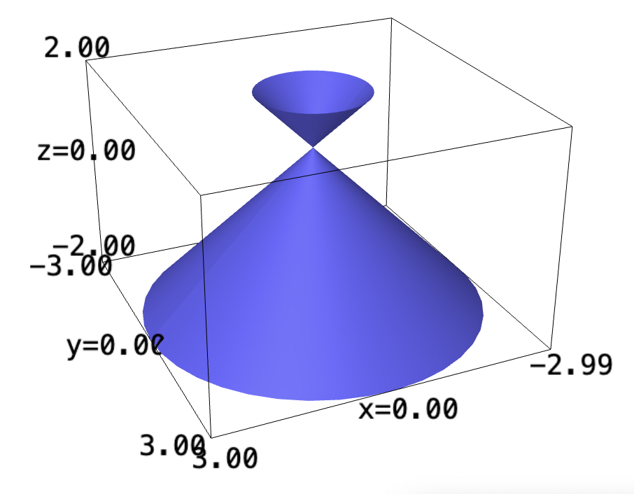

Backlinks
Table of Contents
1 HVAC
We need to find the volume of the following shape:
\begin{equation} \begin{cases} x(t) = 30\ cos(t) \\ y(t) = 20\ sin(t) \\ r(x,y) = \frac{1}{400}\left(\sqrt{3}x-y\right)^2 - \frac{1}{400}\left(\sqrt{3}y-x\right)^2 + 10 \end{cases} \end{equation}Due to the squaring and unit subtraction on the lower \(r\) function, conversion to polar actually rendered leveraging the Pythagorean theorem almost impossible. Hence, we will do this problem in Cartesian form.
We first begin by again creating the elliptical projection of the shape downwards.
x(t) = 30*cos(t) y(t) = 20*sin(t) parametric_plot([x,y], (0, 2*pi))

Solving for the top bound function for \(t\), then substituting into \(y\):
\begin{align} &x = 30\ cos(t) \\ \Rightarrow & \frac{x}{30} = cos(t) \\ \Rightarrow & t = \arccos\left(\frac{x}{30}\right) \end{align}substituting into \(y\), then:
\begin{align} y = 20\ sin\left(\arccos\left(\frac{x}{30}\right)\right) \end{align}Now, we know that:
\begin{align} &\sin^2\ \theta + \cos^2\ \theta = 1\\ \Rightarrow &\sin^2\ \theta = 1 - \cos^2\ \theta\\ \Rightarrow &\sin\ \theta = \sqrt{1 - \cos^2\ \theta}\ \end{align}setting \(\theta = \arccos(x)\):
\begin{equation} \sin(\arccos(x)) = \sqrt{1-x^2} \end{equation}Hence:
\begin{equation} y = \pm 20 \sqrt{1-\left(\frac{x}{30}\right)^2} \end{equation}Great, we can now take the integral of this function. For values of \(y\), along the bounds of the circular function above; for the values of \(x\),
r(x,y) = (1/400)*(sqrt(3)*x-y)^2 - (1/400)*(sqrt(3)*y+x)^2 + 10 r.integrate(y, -20*sqrt(1-(x/30)^2), 20*sqrt(1-(x/30)^2)).integrate(x, -30,30)
It appears that our shape has volume of \(6375 \pi\); hence the volume is about \(20017.5\) metres squared.
It is at this point I realized that—having spent months calling American Standard about buying a furnace—HVAC systems are sold by BTU calculated by square footage by multiplying it by 20.
Given the function, we can figure the square meterage then covert to foot:
y(x) = 20*sqrt(1-(x/30)^2) y.integrate(x, -30,30)
the function has an area of \(2\cdot 300\pi = 600\pi\). One square meter is about \(10.76\) foot—your house mansion is about \(20282\) square foot.
The BTU needed for the house is \(405640\) BTU. Daikin, the Japanese air conditioning company, seems to sell this commercial furnance selling for $18,439 the brand; if I recall, Daikin had pretty bad customer support in the US, and their resellers were hard to come by. However, perhaps their commercial segment is better.
2 Average over curve
We will need to convert the expression into polar to figure the value.
\begin{equation} f(x,y) = \sqrt{x^2+y^2} \end{equation}We recall that \(\sqrt{x^2+y^2}\), in polar form, represents simply \(r\). Hence:
\begin{equation} f(r, \theta) = r \end{equation}We are given a parameterization \(r = 3\sin 2\theta\), creating:
\begin{equation} f(r,\theta) = 3\sin 2 \theta \end{equation}We now realize that this value is exactly the same as that of the sum over entire curve — rendering the mean value:
\begin{equation} \frac{\int_B 3\sin 2\theta}{\int_B 3\sin 2\theta} = 1 \end{equation}where \(B\) is the range given.
3 Ice Cream Cone
Let's plot the ice cream first:
theta,z=var('theta z')
cylindrical_plot3d(1-z,(theta, 0, 2*pi),(z,-2,2))

The function has no actually upper or lower bound. A typical ice cream cone is about 10 cm. Hence, \(z\) from \(0\) to \(-9\) would render a \(10\) cm upside-down ice cream cone.
At the top, it has a radius of \(10\) units (\(1-(-9) = 10\)).
At each of the rings, it has height \(dz\), and circumference \(2(1-z)\pi\). Hence, the total density-scaled mass is:
\begin{align} &\int_0^{-9} 2(1-z)\pi\ dz\\ \Rightarrow &2\pi\int_0^{-9} 1-z\ dz\\ \Rightarrow &2\pi\left\left(z - \frac{z^2}{2}\right)\right|_0^{-9} \end{align}The resulting density-scaled mass is \(99\pi\).
4 Timinsky's Sphere
To calculate the volume of the sphere, we are going to take the volume over the triple integral.
Recall that, in spherical coordinates, the differential volume \(dV = \rho^2\ \sin{\theta} d\phi\ d\theta\ d\rho\).
Therefore, taking the integral of the function over half of a perfect sphere (i.e. \([0, \pi]\)). We do this because, otherwise, the mass would cancel out across two sides.
rho, theta, phi = var("phi theta rho")
d(rho, theta, phi) = 100-rho^2
(d*sin(theta)*rho^2).integrate(phi, 0, pi).integrate(theta, 0, pi).integrate(rho, 0, 2)
Therefore, the actual is two times this amount: \(\frac{15616}{15}\pi \approx 3270.60\) kg.
5 Postmortem
Its now 1:10AM in Philly, and we are due for a 7:30 wake up to a 8A poster session. Fortunately, I will be only be presenting in the afternoon—and I hope the coffee would kick in by then.
Thanks as always for posting the PSets early and designing a fun set; apologies in advance for any careless mistakes, I will be back later this week before Wednesday to clean them up.
Time for bed now.